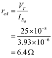

Step 1:
The transistors B’s emitter current is 99% of . That is
. That is
Hence the resistance

The emitter current of the transistor  is given as
is given as
Hence, the resistance is
For finding the incremental gain, let us consider small signal equivalent for the given diagram
From the above diagram the voltage
The output voltage.
The current .
Now, by substituting the value in which gives
Now the output voltage becomes as
The incremental gain is
…… (1)
Step 2:
By substituting the all the values in the above equation, which gives
The incremental voltage gain is .
Step 3:
From the characteristics at point m,
The current is,
Step 4:
Step 5:
The current  is ,
is ,
Step 6:
The resistance  is,
is,
Step 7:
The input resistance is,
Now the gain is given as
The incremental voltage gain is .
Step 8:
Now at point Y, emitter current is 90% of  .
.
Therefore,
The resistance is,

The current
The resistance is,
Step 9:
Step 10:
The resistance  is given as
is given as
Step 11:
The resistance is given as
Step 12:
The incremental gain is,
Therefore, the incremental voltage gain is .